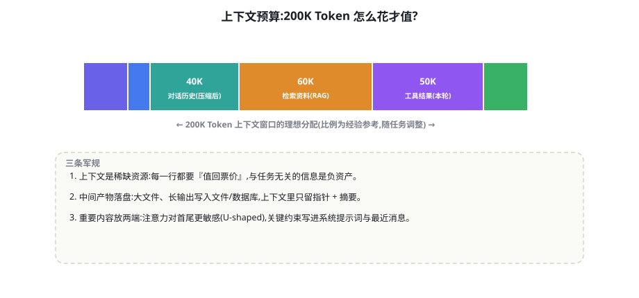
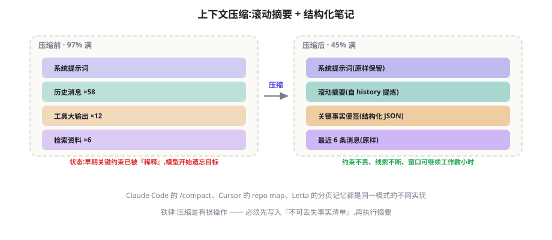

上下文工程：Context Engineering 的艺术
提示工程关注「怎么说」，上下文工程关注「让模型在决策那一刻看见什么」。它是 Agent 时代对提示工程的替代性升级：窗口是稀缺资源，每一行上下文都必须值回票价。本章讲透预算分配、压缩、笔记与按需检索四大技术。
重新定义：从提示工程到上下文工程
「提示工程」这个词在 Agent 时代已经不够用了。它暗示的工作对象是一段静态文本，而 Agent 的上下文是每轮都在变化的动态集合：系统提示词、对话历史、工具结果、检索资料、记忆注入、任务清单——每一轮的组装决策都影响模型行为。Anthropic 在 2025 年的工程文章《Effective context engineering for AI agents》里给出的定义很精准：上下文工程是在有限窗口预算下，为每一步决策精选恰当选址的信息子集。它是一门「注意力经济学」：模型的有效注意力随上下文膨胀而稀释（第 5 章讲过的「中段遗忘」、lost-in-the-middle 现象），塞得越满，每条信息的平均待遇越差。
这个视角下，Agent 的大量「玄学问题」都有了经济学解释：长对话后忘了系统提示词的约束（注意力稀释）；检索了很多资料回答反而变差（噪音挤占）；工具结果越长回答越差（信噪比下降）。对应的工程答案也不再是「改提示词」，而是「重新分配注意力预算」。

注意力机制的现实：模型怎么「读」你的上下文
预算策略的科学依据来自对模型「阅读行为」的实证理解，三条最重要的发现。发现一：U 型注意力——Lost in the Middle（Liu et al., arXiv:2307.03172）的实验显示，模型对上下文开头与结尾的信息利用率显著高于中段，中段的事实召回率可以比两端低两成以上。工程推论：最重要的约束放系统提示词（开头），最即时的信息放最近消息（结尾），中段位置只放「按需可查」的参考材料。发现二：结构是注意力的脚手架——清晰的分隔（XML 标签、Markdown 标题、[标记]）能显著提升模型对信息边界的辨识，混杂的长文段落是最差形态。工程推论：每类内容用统一的标记包裹（第 6 章的 XML 标签传统），并在系统提示词里告诉模型「各标记是什么」。发现三：重复即强调——同一条关键约束出现多次（系统词 + 便签 + 任务描述）的遵从率显著高于出现一次。工程推论：关键红线的「策略性重复」不是浪费预算，是花小钱买服从——但要控制在 2~3 处（过犹不及，重复太多同样稀释）。这三条发现合起来，构成了本章所有技术的「为什么」——预算分配是在为注意力热点排座次，压缩与笔记是在为注意力做保鲜，按需注入是在为注意力减负。
预算管理：像管理内存一样管理上下文
把上下文当作一套「内存管理」问题来做，四个机制构成完整的预算系统：
- 配额（Quota）：给每类内容设定硬上限——系统提示词 ≤2K、单次工具结果 ≤4K、检索资料总量 ≤16K、历史摘要 ≤8K……配额的意义是「超限即触发治理动作」而非「直接截断」。
- 计量（Metering）：每次组装上下文前本地计数（tiktoken，第 5 章），记录「预算去向」——没有计量就没有优化，这是上下文版的「成本记账」。
- 分级（Tiering）：信息按「必须常驻 / 按需注入 / 落盘待取」三级存放——常驻层放约束与目标，按需层放当前步骤相关资料，落盘层放一切大体积产物（第 17 章的落盘-指针模式）。
- 回收（Eviction）：超预算时的优先级淘汰——最先丢「已完成步骤的工具原始结果」（换指针）、再丢「低相关检索块」、最后压「对话历史」。
给你的 Agent 加一行「预算仪表」日志：每次调用记录六类内容的 token 占比。连续跑一天后看分布——大多数团队会震惊于「工具原始结果」占据 40% 以上，而其中被实际使用的不及三分之一。这个数字是你说服团队投入上下文治理的最有力证据。
压缩：折叠过去，保住关键

压缩（Compaction）是长时程 Agent 的生存技术，Claude Code 的 /compact 是它的著名实现。工程要点按序：触发时机——按占用率（如达预算 80%）或按轮次，不要等到爆窗口（被动截断丢信息的方式最差）；保留结构——系统提示词原文保留、关键事实便签（结构化 JSON：目标、约束、已完成、待办）原样保留、最近 K 条消息原样、其余滚动为摘要；摘要的责任分离——「发生了什么」（叙事摘要）与「决定了什么、还欠什么」（状态摘要）分开生成，后者是恢复工作的关键，格式化产出；压缩后验证——用一两句「我们的目标是什么？现在到哪了？」探测模型是否还记得关键约束，失忆则回填便签。
KEEP_RECENT = 6 # 最近消息原样保留条数
def compact(messages: list, budget: int) -> list:
"""超过预算时: 旧消息折叠为双段摘要"""
if token_count(messages) <= budget:
return messages
sys_msgs = [m for m in messages if m["role"] == "system"]
history = [m for m in messages if m["role"] != "system"]
old, recent = history[:-KEEP_RECENT], history[-KEEP_RECENT:]
narrative = llm(f"压缩以下对话为叙事摘要(发生了什么,200字内):\n"
f"{render(old)}")
state = llm(f"从对话提取任务状态,输出JSON:"
f"{{goal, constraints, done, todo}}:\n{render(old)}")
# 关键事实先落盘(铁律),再返回压缩后的消息序列
save_to_disk(state)
return sys_msgs + [
{"role": "user", "content":
f"[历史摘要]\n{narrative}\n[任务状态]\n{state}\n"
f"(完整记录已存盘,需要细节可用 recall 工具查询)"},
*recent]KV Cache 友好设计：被忽视的延迟与成本杠杆
Manus 团队的技术复盘揭示了一个多数团队错过的杠杆：上下文序列的「前缀稳定性」直接决定 KV Cache 的命中率（第 4 章讲过 KV Cache 的原理——相同前缀的注意力计算可以复用）。多轮 Agent 对话中，只要消息序列的前缀逐轮保持不变（只追加、不修改、不重排），缓存命中就能让重复部分的计算成本与延迟大幅下降（量级：一半以上的输入成本）。由此推出一组反直觉的纪律：不要在系统提示词里放时间戳（每轮变化 → 前缀失效）；不要在历史中间插入新内容（追加式维护）；把易变内容放序列尾部（动态注入的新资料、本轮工具结果放最后）；压缩也要「大块地压」（频繁小幅修剪同样破坏前缀）。第 5 章的采样策略讲过「确定性是工程的前提」，本章补上它的孪生兄弟：稳定性是缓存的前提。这两条合起来是同一句话——上下文的「可预测性」是 Agent 性能的隐形地基。
结构化笔记：给模型一个「外置工作台」
压缩解决「过去太长」，笔记解决「关键信息要在场」。笔记（便签/工作台/scratchpad）是模型可读写的结构化状态文件，第 30 章 Claude Code 的 todo.md 是它的著名形态。与自由对话相比，笔记有三大优势：注意力优势——笔记在上下文里有明确标记（[任务状态]），比埋在 50 轮历史里的事实待遇好得多；持久优势——上下文压缩、会话重启都不影响文件里的笔记；协作优势——人类可以直接查看编辑笔记（审批计划、修正方向），成为人机协同的天然界面（第 25 章）。
笔记的内容设计建议五段式：目标（一句话总目标，每轮可见防漂移）、约束（不可违反的红线）、已完成（事实性记录，附产物指针）、进行中（当前步骤与阻塞）、待办（有序清单）。写作纪律与代码注释同理：写「事实与承诺」，不写「过程与情绪」。更新时机绑定在事件上（完成一步、遇到阻塞、方向变更）而非每轮全量重写——笔记的历史也是审计线索。
案例：一个 4 小时任务的前后对照
用长任务案例把本章技术串成时间线。任务：「把这批 60 份调研报告做主题分析并产出综述」——典型的小时级任务（第 76 章的长时程场景）。无治理版的行为记录：前 10 份报告分析质量良好；第 25 份开始，早期报告的发现被「遗忘」（上下文里还有但注意力够不到）；第 40 份触发被动截断，最早的分析记录直接丢失，综述出现主题遗漏；最终综述需要人工补查 3 个主题，返工约两小时。治理版的设计：开工前建立笔记（五段式：目标里写明「必须覆盖全部 60 份」）；每分析完一份 → 该报告的关键发现以两行摘要写入笔记「已完成」段，原文落盘；上下文只保留当前正在分析的报告全文；每 15 份做一次「中期综述」写进笔记（增量式的综合，防最后一次性综合过载）；全部完成后基于笔记（而非历史）产出终稿。结果：主题覆盖完整，总 token 消耗约为无治理版的六成，无返工。对照的本质差异：无治理版把上下文当「存储」（什么都想记住），治理版把上下文当「工作台」（只放正在处理的东西）——这一字之差，就是长时程任务的成败分界。
Just-in-Time 检索：按需注入的哲学
传统 RAG 思维是「先检索再对话」（一次性把资料备齐），Agent 时代的正确姿势是 just-in-time：上下文里只放「指针与摘要」，模型需要细节时用工具现取。第 17 章的「落盘-指针-摘要」是这个哲学在工具结果上的应用，第 19 章的记忆工具化（recall(query)）是它在记忆上的应用。三个设计推论：推论一：工具返回值天生应该「小」——返回摘要加指针，而不是全文；推论二：给模型「取」的工具比「塞」的上下文更高效——read_file(offset, limit) 让模型按需翻页，比一次性注入 50K 文档便宜且准；推论三：注入时机越接近使用时机越好——第 19 章讲过记忆注入的「临用现取」原则，检索资料同理：上一轮检索的资料这一轮未必还需要，替换为指针能同时省预算和提信噪比。
| 信息类型 | 正确位置 | 错误做法 |
|---|---|---|
| 系统约束与目标 | 系统提示词（常驻）+ 笔记首段 | 埋在对话中段（注意力洼地） |
| 任务清单与进度 | 结构化笔记（外置文件） | 散落在历史消息里 |
| 大体积工具产物 | 落盘 + 指针 + 摘要 | 原文塞进上下文 |
| 参考资料 | 当前步骤按需注入，用完指针化 | 一次检索全量常驻 |
| 用户长期偏好 | 记忆系统按需召回（第 19 章） | 每轮全量注入画像 |
| 历史对话 | 滚动摘要 + 近期原样 | 无限追加原始消息 |
多 Agent 场景的上下文分工
本章原则在多 Agent 系统（第 24 章）有一组直接推论，提前在这里点透。推论一：每个 Agent 的上下文是它的「全部世界」——Worker 看不到主 Agent 的思考过程，只看到任务书；因此任务书必须自包含（它无法「回头问」写任务书时的语境）。推论二：子 Agent 的上下文是「一次性」的——它结束后即销毁，所有需要留存的发现必须写进返回值——这解释了为什么子代理的返回值设计（摘要 + 证据 + 置信度）如此关键。推论三：Orchestrator 的上下文应该「只见摘要不见过程」——如果 Worker 的原始轨迹回流到主上下文，多 Agent 的隔离红利瞬间归零。这三条推论的本质是同一条：上下文边界 = 信息流的契约边界。多 Agent 系统的设计，很大程度上就是「每个 Agent 的上下文里该有什么、不该有什么」的设计——先画上下文边界图，再写代码，是这类系统正确的打开顺序。
关于压缩还有一条被反复验证的细节值得单独成段：压缩的「不可逆感」要刻意管理。被压缩掉的信息在用户视角里「消失」了——当用户提到「我之前说过的那个方案」，而那个方案在三轮前被压缩成了摘要里的一行，Agent 的茫然会直接伤害信任。两个缓解：压缩摘要里保留「索引条目」（「第 5-8 轮讨论了方案 A 的三个变体，详见存档 X」），让模型至少知道自己「不知道什么」并指引追溯；提供「翻旧账」工具（recall/lookup），让模型面对指代时能主动找回原文而不是编造。上下文工程的终极目标不是「窗口里装下一切」，而是「知道自己知道什么、也知道自己不知道什么」——这一课，其实第 19 章的记忆系统早就预习过了。
被污染的内容一旦进入上下文，就会随历史持续影响后续所有决策——间接注入的恶意指令（第 59 章）、被污染的工具结果、错误记忆的召回，都是「进得来、出不去」的 resident evil。治理三板斧：注入检测在入口（第 59 章的 spotlighting 标记）；可疑内容「指针化」隔离（标记为不可信数据，而非删除——保留审计线索的同时降低注意力权重）；必要时「上下文重启」（从笔记与存档重建干净上下文，丢弃全部历史）——这是污染事故的「格式化重装」，也是笔记外置的最大保险价值：只要关键状态在笔记与存档里，历史永远可以牺牲。
Agent 特有的三个上下文陷阱
- 工具结果的「回声墙」：每轮工具结果都留在历史里，越滚越大且大量重复（同一文件被读五次就有五份拷贝）。治理：完成后即指针化的淘汰纪律（本章回收机制）。
- 系统提示词的「规则坟场」：为修每一个 bug 往系统提示词加规则，半年后 300 行规则互相打架，模型选择性遗忘——第 30 章「把规则变成 Hooks/校验器」的提醒在这里是上下文问题：系统提示词的每个字都在花预算，规则要定期「重构成代码」。
- 「为模型准备」与「给用户看」的消息混杂：把给用户的 UI 消息与给模型的上下文用同一份数据流，导致上下文里全是展示性文本（寒暄、表情、格式标签）。治理：双通道分离——模型的上下文精简严肃，展示层另行渲染。
一张自检表：你的问题是提示问题还是上下文问题
| 症状 | 诊断 | 药方在 |
|---|---|---|
| 新会话第一条消息就答错 | 提示问题（指令不清/示例缺失） | 第 6 章 |
| 同样问题时对时错 | 上下文敏感（历史影响判定） | 本章：隔离/裁剪历史 |
| 长对话后「忘记」开头的约束 | 注意力稀释 + 无重复锚定 | 本章：便签 + 策略性重复 |
| 给了资料反而答得更差 | 噪音挤占（信噪比下降） | 本章：按需注入 + 分级 |
| 工具结果越长回答越短越差 | 结果体积失控 | 第 17 章 + 本章：落盘指针 |
| 每轮延迟与成本持续上涨 | 历史无淘汰 + 缓存失效 | 本章：回收 + KV 友好设计 |
一个合理的疑问：窗口越来越大（百万级 token 已见）、注意力机制持续改进，上下文工程会不会像早期的「内存优化」一样随硬件进步而消失？本书的判断是「部分消失，部分永存」。会消失的：为「塞不下」而做的极致压缩——当窗口与成本不再紧张，「被迫折叠历史」的技巧会失去意义。会永存的：为「注意力质量」而做的组织——信噪比、结构清晰、关键信息的置位、按需注入——因为它们对抗的不是窗口大小，而是注意力分配的物理规律：无论多大的窗口，「与当前决策相关的信息子集」永远是全集的小部分，把相关者放近、把无关者放远，永远有价值。这也是本章标题用「艺术」而非「技巧」的原因：它管理的不是字节，而是模型的注意力——只要注意力仍然是稀缺资源，这门手艺就永远有它的位置。
三个高频疑问
Q：预算比例（图 23-1）有科学依据吗？没有普适比例——那是一组从实践里来的经验锚点，作用是「给你一个起点」而非「给你答案」。正确的做法是：先按图里的比例初始化，跑你的真实任务一周，然后让预算仪表的数据（哪类内容被实际引用的比例）驱动调整。检索密集的任务可以把 RAG 配额提到五成，代码密集的任务工具结果配额自然走高。比例是任务的特征，不是教科书的标准。
Q：摘要应该用同一个模型还是小模型？看摘要的用途：叙事摘要（发生了什么）用小模型足够——它是信息压缩任务；状态摘要（决定了什么、还欠什么）建议用同档模型——漏掉一个待办的成本远高于省下的差价。另一个方向的经验：压缩本身可以「定期批处理」——攒够触发条件再压，摊薄调度成本，同时给「先落盘」的操作留足时间窗口。
Q：笔记文件会不会被模型「玩坏」（乱改、忘记更新）？会，三个防护：格式约束（结构化笔记用 Schema 校验，坏了打回重写——第 8 章的结构化输出）；更新时机绑定事件而非自由判断（完成步骤时、遇到阻塞时由代码触发更新请求）；关键段落（目标与约束）设为「只读」——代码层只允许模型改「已完成/进行中/待办」三段，目标与约束的修改走显式的人机确认。笔记是共享状态，对共享状态的写权限管理，就是第 25 章权限设计在上下文层的投影。
收束本章，也收束整个机制篇。回看这 12 章，它们其实回答了同一个问题的四个层面：一个 LLM 如何在真实世界里持续做好一件事——循环给了它节奏（第 15 章），工具与规划给了它手脚与方向（第 16-18 章），记忆与检索给了它经验与事实（第 19-21 章），反思与上下文工程给了它自我修正与资源纪律（第 22-23 章），多 Agent 与人机协同给了它组织与边界（第 24-25 章）。这些机制没有一个是孤岛：循环里跑着工具，工具喂着上下文，上下文承载着记忆与计划，反思守护着全程，多 Agent 在边界外交接。接下来第三部分，我们看这些机制如何被各种框架「打包上市」——你已经知道包装纸下面的每一颗螺丝，这正是读懂它们的全部本钱。
最后补一条关于「上下文工程的学习方法」的建议：这门手艺的最佳练习材料是你自己的失败轨迹。每周从 trace 里挑一条「模型表现差」的记录，做一次上下文尸检——把当时的完整上下文打印出来，逐段问「这段信息在帮助决策吗？」你会持续发现三类废物：从未被后续步骤引用的大块资料（删）、重复出现的信息（并）、与决策无关的礼貌性内容（清）。坚持四周，你对「值回票价」的判断力会发生质变——这种判断力无法从书本获得，只能从尸检中长出来，本章给的是手术刀，标本得从你的系统里来。
补最后一个工程细节：上下文组装的「分层渲染」。实践中最稳的做法是把「每轮上下文的组装」做成一个显式函数（build_context(step_state)），而不是散落在业务代码里的字符串拼接。组装函数的输入是当前状态（步骤、任务、预算），输出是严格排序的消息序列——系统段、常驻段、注入段、历史段、本轮输入。这个函数的黄金地位在于：它是整个上下文工程的唯一落点——预算校验、淘汰、压缩触发、缓存友好排序，全部在这一个函数里实现与测试。第 27 章的 messages 变量是它的雏形，正式化它，你的上下文工程就从「手艺」升级为「工程」。
上下文工程的学习曲线以一个顿悟为分水岭：从「怎么让模型注意到」到「怎么让模型不需要注意」——前者的答案是排版与置位（术），后者的答案是根本不把无关信息放进窗口（道）。愿你早日抵达后者。
（机制篇·完）祝贺你完成了全书最重要十四章的学习——下一站，工程与框架篇。
把三问贴在你的开发循环里：今天的上下文里，有没有「模型两轮内不会用到的信息」？（有 → 指针化）有没有「约束被挤到中段」？（有 → 提到便签）有没有「可以稳定前缀的改动」？（有 → 追加化）。每日一检三分钟，长期回报是数量级的成本差与质量差。
本章小结
- 上下文工程 = 注意力经济学：窗口是稀缺资源，模型注意力随膨胀稀释。
- 预算四机制：配额、计量、分级、回收——先上计量（预算仪表），数据会说话。
- 压缩要点：80% 触发、系统词与便签保留、叙事与状态双段摘要、压缩后验证。
- 笔记五段式（目标/约束/已完成/进行中/待办）：外置工作台同时服务注意力、持久与协同。
- Just-in-time 哲学：指针与摘要常驻，细节按需现取；注入时机越近越好。
- 三大陷阱：回声墙、规则坟场、双通道混杂——治理都指向「上下文纪律」。
- 注意力的三条实证：U 型分布、结构是脚手架、重复即强调——所有技术的「为什么」。
自测题
- 给你的 Agent 加预算仪表并跑一天，写出六类内容的实际占比与最意外的一项。
- 为什么「被动截断」是最差的超预算处理？按本章淘汰顺序写出你的系统的前三个淘汰动作。
- 压缩后「叙事摘要」与「状态摘要」为什么要分开？合并生成会丢什么？
- 把你系统的系统提示词拿出来做「规则坟场体检」：哪些规则可以重构成代码/Hooks？哪些可以合并？
参考文献与延伸阅读
- Anthropic (2025). Effective context engineering for AI agents. anthropic.com/engineering
- Liu, N. et al. (2023). Lost in the Middle: How Language Models Use Long Contexts. TACL 2024. arXiv:2307.03172（中段遗忘的实证）
- Anthropic (2025). Claude Code 最佳实践（/compact 与 CLAUDE.md）. anthropic.com/engineering
- Manus 团队 (2025). Context Engineering for AI Agents: Lessons from Building Manus. manus.im/blog（todo.md 模式与 KV-cache 友好的上下文设计）
- 12 Factor Agents (2025). Factor 08: Own your context window. github.com/humanlayer/12-factor-agents